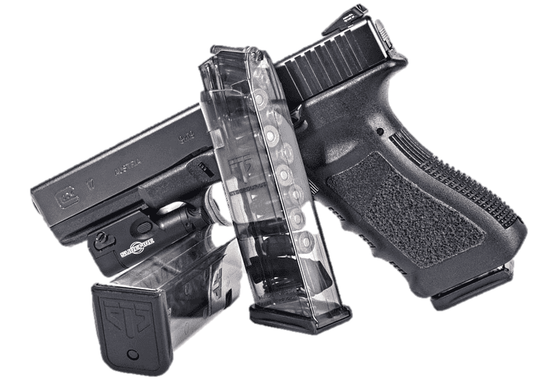

Wie alles begann
1963: Gründung der Glock KG durch Gaston Glock
Gaston Glock gründete das Unternehmen in Deutsch Wagram (NÖ), um militärische Bedarfsartikel auf Kunststoffbasis herzustellen.
1980: Das österreichische Bundesheer war auf der Suche nach einer strapazierfähigen Waffe, die leicht zu tragen
und leicht zu bedienen war. Gaston Glock bot seine Arbeit als Produktentwickler an.
1981: Patentanmeldung
Gaston Glock hatte eine leichte Fausfeuerwaffe mit Kunststoffgriff, vergleichsweise großer Magazinkapazität und
vorgespanntem Schlagbolzen erfunden. Da diese Anmeldung sein siebzehntes Patent war, nannte er den Prototypen
"Glock 17".
1982: Die Glock 17 gewann die Ausschreibung des österreichischen Bundesheers und Gaston Glock wandelte
seine KG in eine GmbH um.
1985: Gründung der Tochtergesellschaft in Georgia (US)
1987: Gründung der Tochtergesellschaft in Ferlach (Ktn)
Die Folgejahre:Gaston Glock eroberte den amerikanischen Markt. Zahlreiche Polizeibehörden (unter anderem das
FBI) arbeiten mittlerweile mit Glock-Pistolen.
2016 wurde das Vermögen des Glock-Imperiums auf 1,65Mrd Euro geschätzt.
Gaston Glock lebt seit jeher sehr zurückgezogen, er ist in zweiter Ehe verheiratet, seine drei Kinder sind in anderen
Branchen tätig.
Unrühmliche Bekanntheit generierte er durch die Nähe zur FPÖ (ein Vorwurf, den er stets dementierte), wie auch durch eine
Klage gegen Amnesty International, die er 2012 endgültig verlor.
Am 19. Juli 2019 beging Gaston Glock seinen 90. Geburtstag.